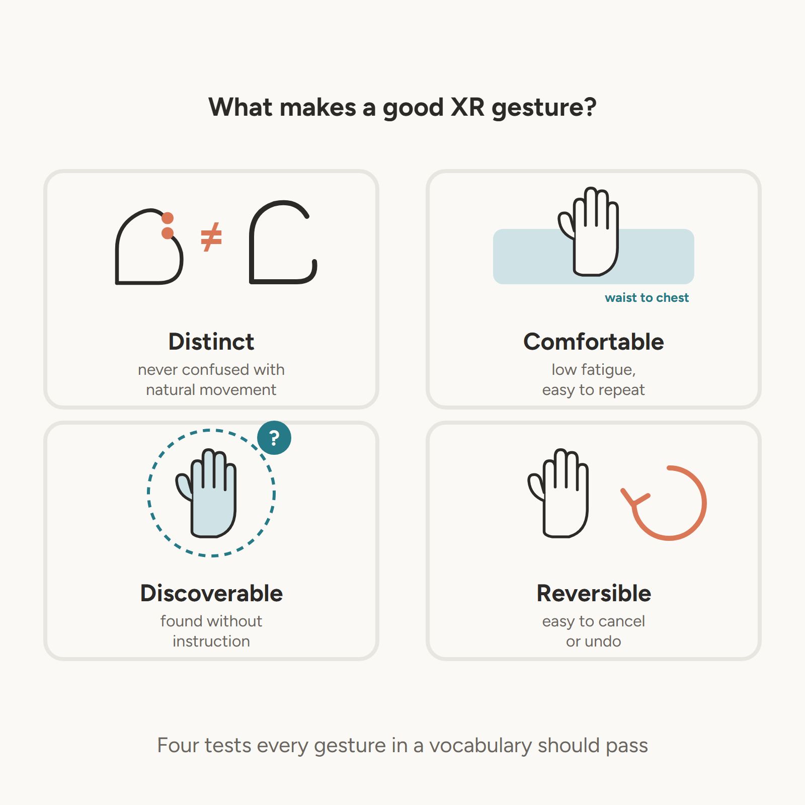
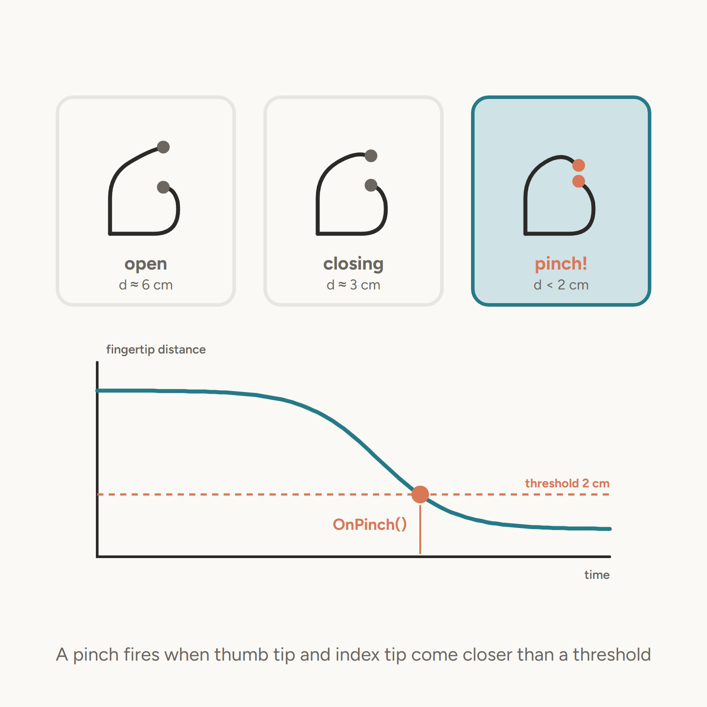
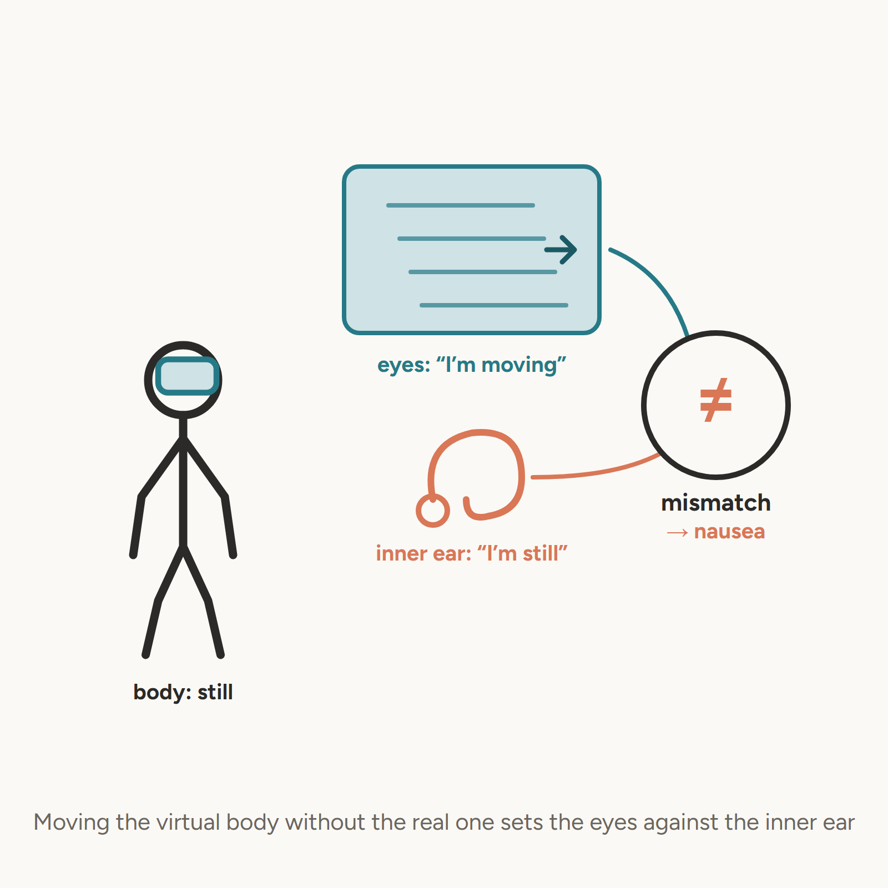
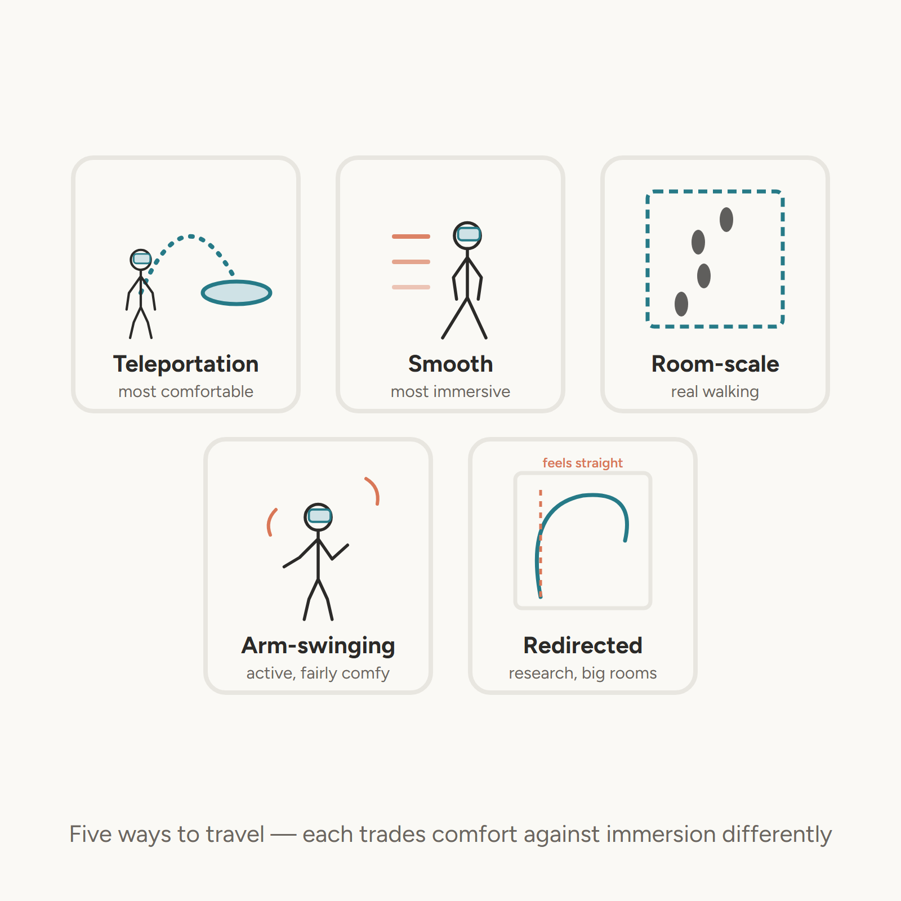
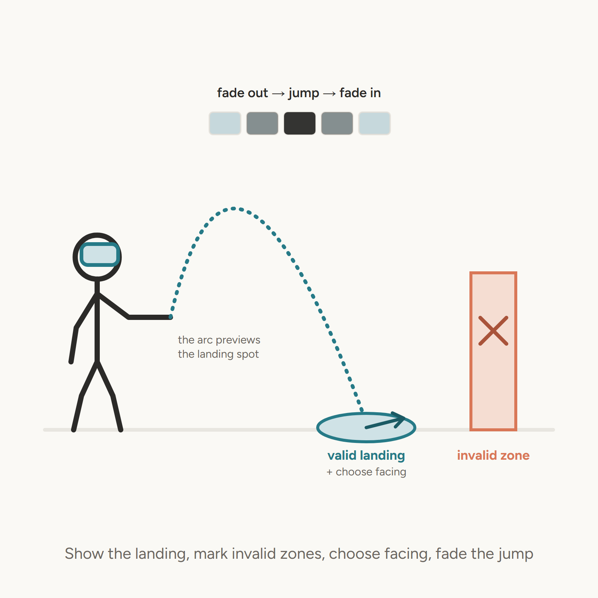
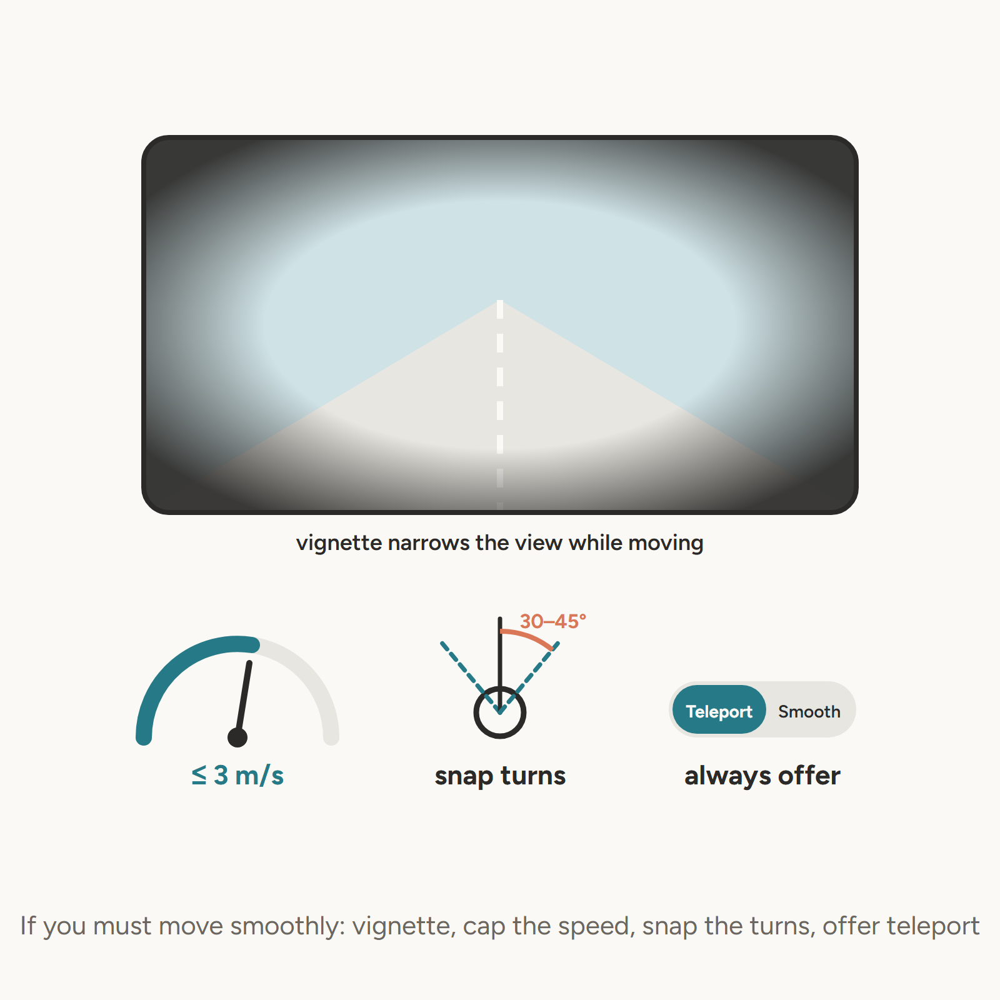
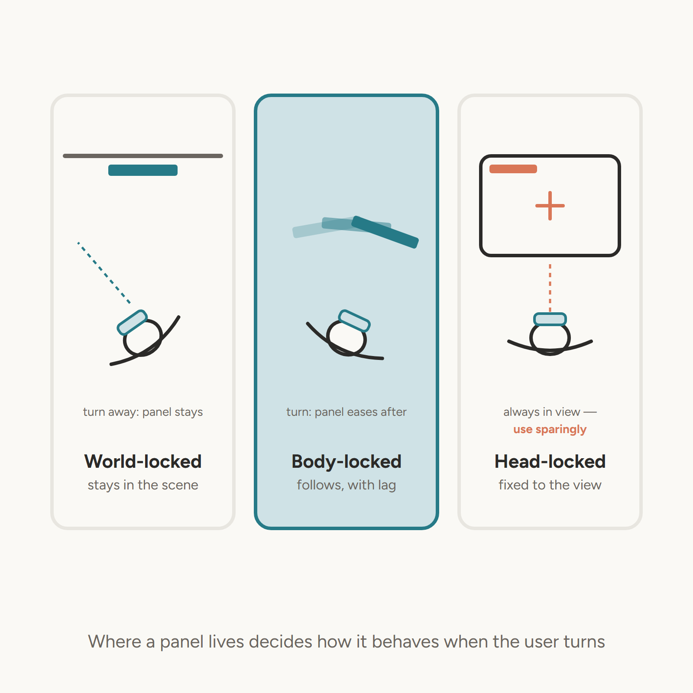
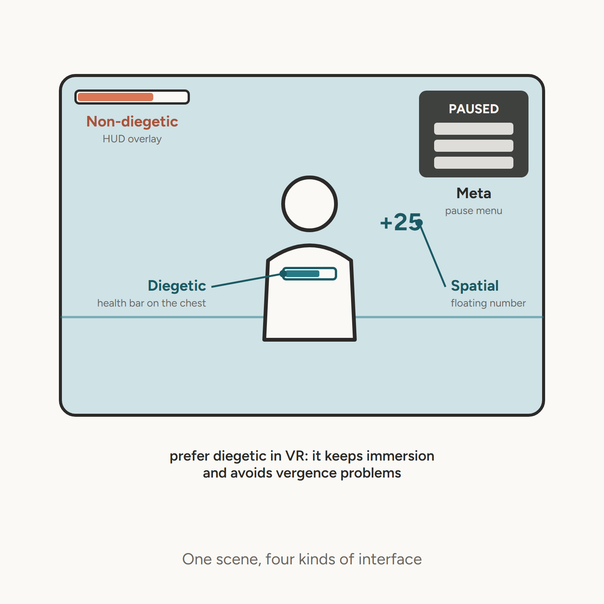
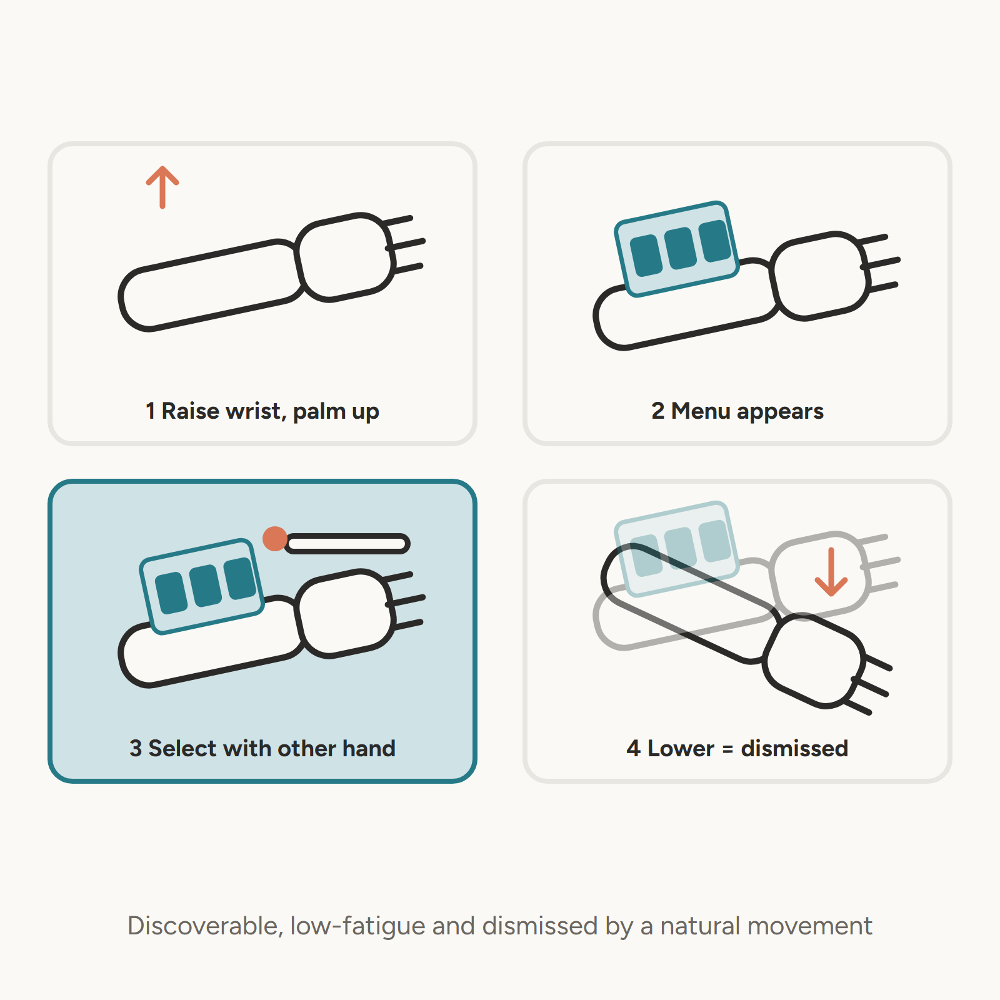
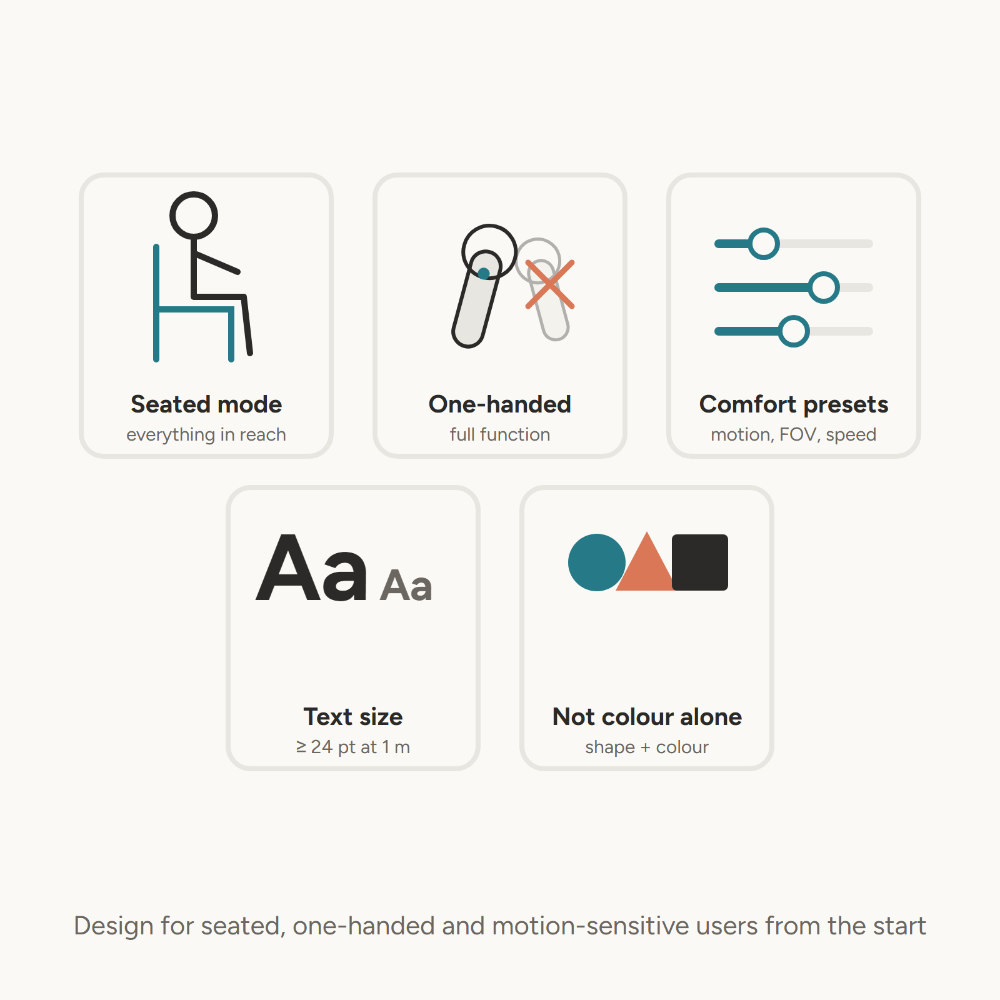

Gesture, Locomotion & Spatial UI
| Gesture | Common Use |
|---|---|
| Pinch | Select, confirm |
| Open palm | Cancel, stop |
| Point | Navigate, indicate |
| Two-hand spread | Scale |
| Two-hand rotate | Rotate object |

// Example: detect a pinch with the XR Hands package
using UnityEngine;
using UnityEngine.XR.Hands;
XRHandSubsystem hands; // from SubsystemManager.GetSubsystems
void Update() {
var hand = hands.rightHand;
if (!hand.isTracked) return;
if (hand.GetJoint(XRHandJointID.ThumbTip).TryGetPose(out var thumb) &&
hand.GetJoint(XRHandJointID.IndexTip).TryGetPose(out var index) &&
Vector3.Distance(thumb.position, index.position) < 0.02f) {
OnPinch(); // fingertips closer than 2 cm
}
}
Locomotion is the #1 cause of simulator sickness

| Technique | Comfort | Immersion | Use Case |
|---|---|---|---|
| Teleportation | ★★★★★ | ★★★ | General VR |
| Smooth locomotion | ★★★ | ★★★★★ | Games, training |
| Room-scale | ★★★★★ | ★★★★★ | Small spaces |
| Arm-swinging | ★★★★ | ★★★★ | Active experiences |
| Redirected walking | ★★★★★ | ★★★★★ | Large spaces (research) |

TeleportationProvider + TeleportationAreaXRRayInteractor with teleport mode enabled
If using smooth locomotion:

| Type | Attached To | Example |
|---|---|---|
| World-locked | Scene | Sign, button on wall |
| Body-locked | User (with lag) | Wrist menu |
| Head-locked | Camera (fixed) | Crosshair, HUD |

| Type | Definition | Example |
|---|---|---|
| Diegetic | Exists in the world | Health bar on character’s chest |
| Non-diegetic | Overlaid on world | Traditional HUD |
| Spatial | In world, not on character | Floating damage numbers |
| Meta | Outside the world | Pause menu |
Best practice for VR: Prefer diegetic UI — it maintains immersion and avoids vergence issues.

A common and effective body-locked UI pattern:
Advantages: Discoverable, low fatigue, natural gesture


This week’s lab: - Implement teleportation in Unity - Build a wrist menu - Compare diegetic vs non-diegetic UI approaches - Test on Quest and Vive Pro